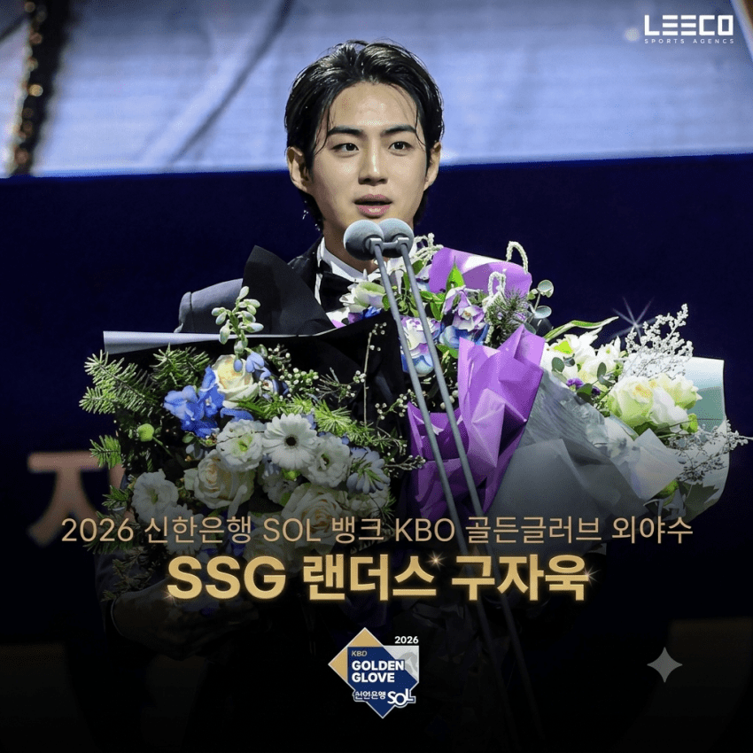
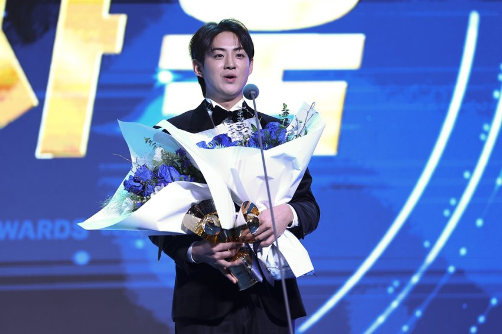
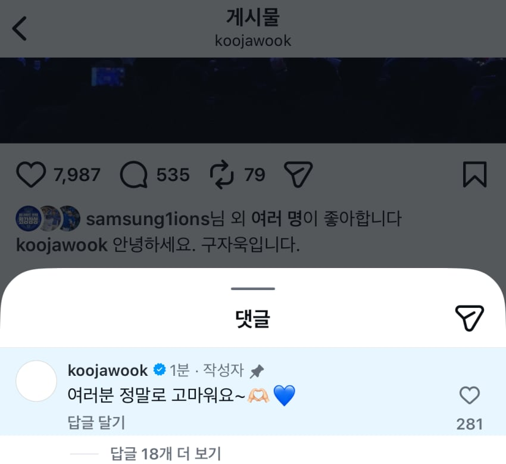
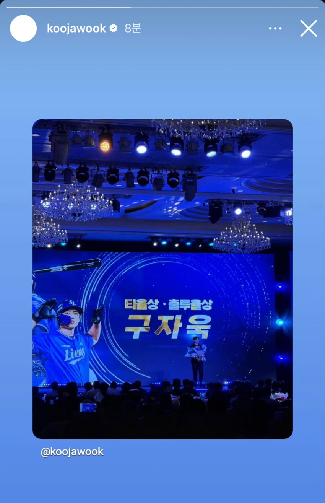
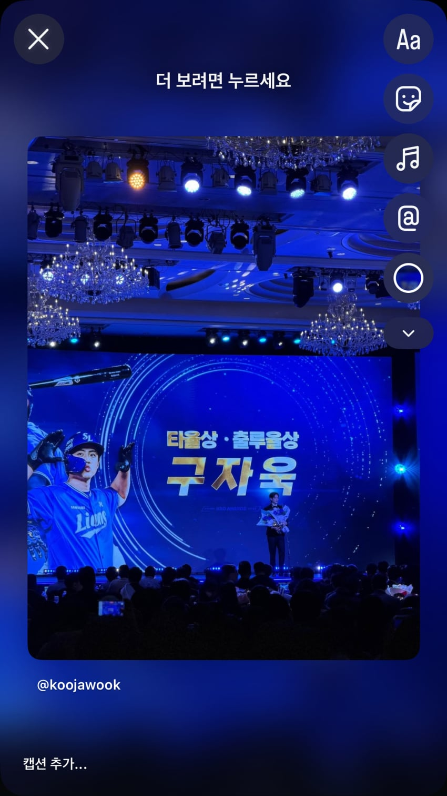

야구선수 구자욱이 SSG랜더스 이적설을 언급했다.
구자욱은 인터뷰에서 SSG랜더스 이적설에 대해 “공부가 됐다”고 말했다.
지난 11월, 구자욱은 정용진과 함께 있는 사진이 찍히며 이적설에 휩싸인 바 있다
구자욱은 “친구들과 밥을 먹는 자리에서 처음 알게 됐다"며 "오래된 건 아니고 알고 나서 친하게 지냈다”며 정용진과의 만남을 말했다.
이어 “그런데 이적설이 불거져 솔직히 너무 놀랐다"며 "맛보기한 느낌이랄까. FA란게 게 이런 기분이구나. 이거 또한 나에게 공부가 되리라고 생각했다"고 말했다.
또 구자욱은 “시즌 끝나고 잠깐 같이 만났을 때 찍힌 사진”이라며 “정용진 형과는 친한 형 동생 사이”라고 덧붙였다.
[OSEX=카리대 기자]
- 구자욱 “대구에서 자람, 퍼레이드 하고싶었는데 구단이 컷”
Q. 카퍼레이드 불참 아쉽지 않은지?
A. 네 많이 아쉽기도 하고, 사실 대구에서 제가 자라고 퍼레이드라는 걸 한번도 보지도, 해보지도 못했기 때문에 하고 싶은 마음은 크지만 상황이라는게 좀 그렇더라구요
결정은 사실, 제가 들은 것도 애초에 없었고 결정도 제가 한건 아니지만
오늘 발언 하나하나에 이래저래 시끄러운거보면구단이 걍 나오지말라한거 잘함 ㅇㅇ

파란색 하트 떴다고 시발 ㅋㅋ
- 속보) 구자욱 인스타 스토리 배경색 본인이 설정했네

구자욱이 올린거고

스토리 공유 눌러보면 자동설정은 이런색으로 뜸 ㅇㅇ
댓글
수집 당시 댓글 18개
봇치쟝 · 11.26 18:56:00
ㅇㅇ · 11.26 18:56:08
· ㅇㅇ · 11.26 19:19:16
ㅇㅇ · 11.26 18:59:41
증거를친일천주새끼들 · 11.26 19:01:39
ㅇㅇ · 11.26 19:04:31
ㅇㅇ · 11.26 19:05:13
히이잉 · 11.26 19:05:21
분분 · 11.26 19:07:27
ㅇㅇ · 11.26 19:07:40
· ㅇㅇ · 11.26 19:20:34
ㅇㅇ · 11.26 19:08:14
ㅇㅇ · 11.26 19:15:47
ㅇㅇ · 11.26 19:20:18
ㅇㅇ · 11.26 19:21:03
ㅇㅇ · 11.26 19:48:12
히이잉 · 11.26 19:49:26
증거를친일천주새끼들 · 11.26 20:01:59